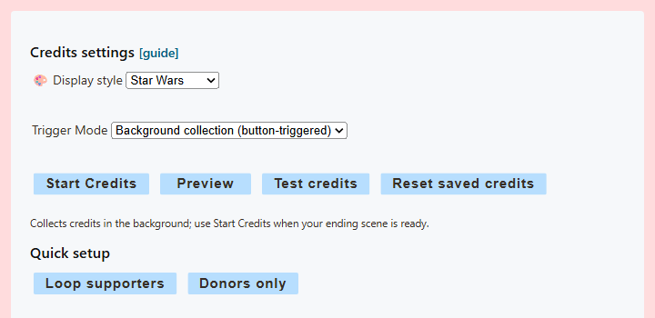
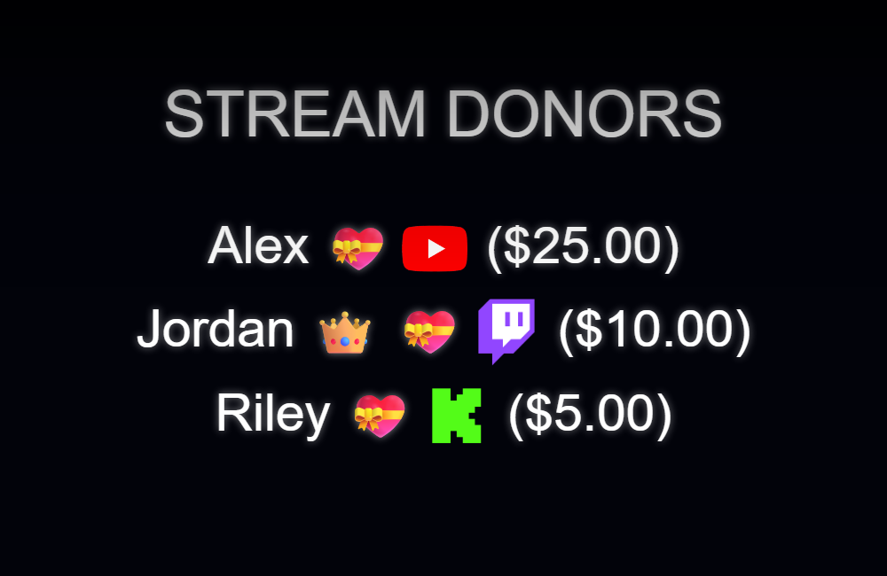

Recommended setup for an ending scene
Use Background collection when the Credits Browser Source exists only in an ending scene or may be unloaded while hidden. The app or extension collects activity during the stream, so the Credits page does not need to stay open.
- Keep Social Stream Ninja active and keep your normal chat sources capturing throughout the stream.
- Open Credits roll → Enable and customize.
- Choose a display style and set Trigger Mode to Background collection before the stream begins.
- Copy the updated Credits link and add it to OBS as a Browser Source in your ending scene.
- Use Test credits while the Browser Source is loaded to confirm the connection and appearance.
- At the end of the stream, switch to the ending scene so OBS loads or reveals the Credits source.
- Select Start Credits, or trigger
creditsStartfrom Stream Deck or the API.

Choose the correct trigger mode
| Mode | Where activity is collected | How the roll starts | Best use |
|---|---|---|---|
| Auto | Inside the loaded Credits page | Automatically when OBS or the browser makes the page visible | The source remains loaded for the entire stream |
| Manual | Inside the loaded Credits page | Start button, Stream Deck, or API | The page stays loaded, but you want exact start timing |
| Background collection | Inside the Social Stream app or extension | Start button, Stream Deck, or API | A separate ending scene or a source that is closed/unloaded during the stream |
What the four controls do
| Control | Result |
|---|---|
| Start Credits | Runs the real collected list. In Auto/Manual mode, displayed entries are removed when the roll finishes unless saving or looping is enabled. New activity received during the roll remains for the next run. Background data remains saved until reset. |
| Preview | Runs the current real list without consuming it. Use this to check the layout before going live. |
| Test credits | Sends built-in participant, member, and donor examples. It does not add to, replace, or clear the real saved list. |
| Reset saved credits | Clears the saved Background list and tells a connected Credits page to clear its local list. |
If Test credits reports that no Credits source is connected, load or reveal the OBS Browser Source and try again.
Who appears in the roll
Credits can recognize captured chat participants, memberships/subscriptions, and donation-style activity. A person needs a captured event with a name and platform type; Social Stream cannot list silent viewers whom the platform never reports.
- Participant: a captured message or named activity event.
- Member/subscriber: a captured membership field or supported subscription/membership event.
- Donor: a captured item with a donation value. Supported currency values are normalized for sorting and optional amount display.
- Identity: the same display name on two different platforms is treated as two source identities.
With the default ranking, each captured activity adds 1 point, membership adds 50 points, and each normalized donation dollar adds 100 points. The list is grouped into VIP Supporters, Regular Supporters, and Stream Participants. Enable Prioritize donations to use the clearer Stream Donors, Channel Members, and Stream Participants groups instead.

Quick setup, filters, and saved data
- Loop supporters: enables looping, saved overlay data, supporter-only filtering, donation priority, and donation amounts.
- Donors only: enables looping, saved overlay data, donor-only filtering, and donation amounts.
- Only include supporters: includes donors and recognized members/subscribers, but excludes chat-only participants.
- Only include donors: requires a captured donation signal.
- Save credits list in this overlay: preserves Auto/Manual page collection across refreshes and source toggles and prevents a completed Start run from consuming the list.
- Loop credits continuously: restarts the animation and incorporates newly collected activity at the next loop.
OBS setup details
- Finish the Credits options first, then copy the Credits URL so the selected URL parameters are included.
- Add that URL as an OBS Browser Source. A normal 1920 × 1080 source works well for full-screen styles.
- If using Auto or Manual, keep the source loaded for the full stream. Reusing the same OBS source in each scene is safer than creating unrelated copies.
- If using Background collection, the source may be absent or unloaded during the stream. It only needs to be connected before Start, Preview, or Test is sent.
- Use Preview or Test to check font size, speed, categories, transparency, and the end message before going live.
Stream Deck and API control
The official Stream Deck plugin exposes Start, Preview, Test, and Reset actions for Credits. The same commands are available through Social Stream's remote-control API:
| Action | HTTP example |
|---|---|
creditsStart | https://io.socialstream.ninja/SESSION_ID/creditsStart |
creditsPreview | https://io.socialstream.ninja/SESSION_ID/creditsPreview |
creditsTest | https://io.socialstream.ninja/SESSION_ID/creditsTest |
creditsReset | https://io.socialstream.ninja/SESSION_ID/creditsReset |
Replace SESSION_ID with the active Social Stream session. Enable remote API control of extension under Global settings → Mechanics. The Credits Browser Source must be connected for Start, Preview, or Test to appear on screen.
Common problems
- Test works, but the real list is empty: test entries are built in and do not prove that activity was collected. Confirm the intended trigger mode was selected before the stream and that chat sources were capturing.
- No controls appear after reopening settings: Start and Preview are shown for Manual and Background modes. Auto starts through visibility instead.
- No Credits source connected: load/reveal the OBS source, confirm it has the current copied URL and session, then retry.
- Chatters are missing: Auto/Manual requires the Credits page to have remained loaded. Use Background collection for a separate ending scene.
- Members or donors are missing: confirm the platform source emitted a named membership or donation event and that Only donors/Only supporters is not excluding it.
- Names vanished after a completed roll: enable Save credits list in this overlay, use Preview, or use Background mode. A normal page-collected Start run consumes displayed entries when saving and looping are off.
- Old names remain: select Reset saved credits before the next stream. Background data is stored per Social Stream session until reset.